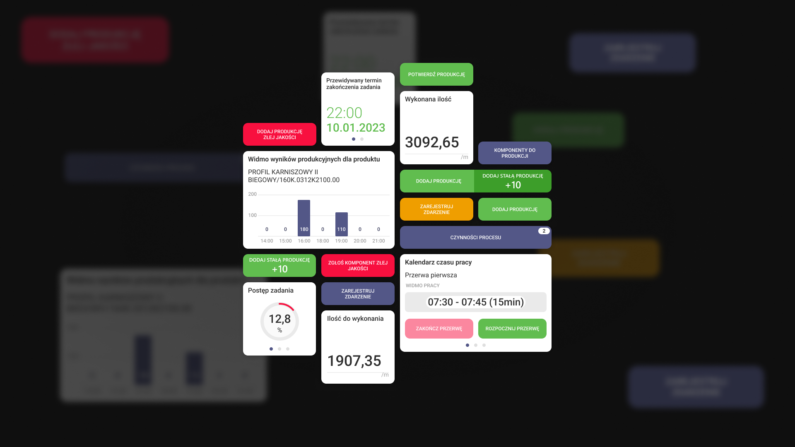

WPROWADZENIE
Zadaniem było zaprojektowanie modułu konfiguracji dashboardu dla aplikacji mobilnej, która jest już dostępna w sklepach.
APLIKACJA MOBILNA
Zadaniem było zaprojektowanie modułu konfiguracji dashboardu dla aplikacji mobilnej, która jest już dostępna w sklepach.
Główną częścią grupy docelowej są osoby nieobyte z technologią na poziomie zaawansowanym, dlatego celem było osiągnięcie prostoty w działaniu i wykorzystanie mechanizmów, z którymi można się już spotkać gdzie indziej.
Konfiguracja składa się z dodawania, usuwania oraz umieszczania danego kafelka w wybranym przez użytkownika miejscu.
Dodatkowo widżety mogą być dostępne w kilku rozmiarach. Dlatego potrzebna była możliwość wyboru rozmiaru widżetu.

Skontaktuj się ze mną
Wystarczy jedno kliknięcie, aby pomóc zmienić pomysł w produkt. Wypełnij formularz, aby udostępnić mi więcej szczegółów na temat projektu.